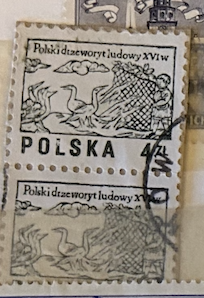
| SOURCE | TITLE| IMAGE MATCH | click to source page |
| Amazon.com | Amazon.com: Poland 2537-2538 (Complete.Issue.) 1977 woodcuts (Stamps for Collectors) : Toys & Games |  |
| eBay | Vintage Polska Postage Stamp 4 ZL Polski drzeworyt ludowy XVw 1977 | eBay | 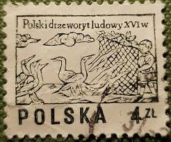 |
| Find Your Stamps Value | Value of polski drzeworyt ludowy xvi stamps | 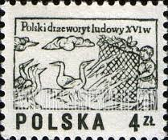 |
| Mystic Stamp Company | 2071A-B - 1977 Poland - Mystic Stamp Company | 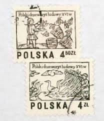 |
| Katalog Polskich Znaczków Pocztowych | Filatelistyka Rocznik 1977 (2236-2392) - Katalog Polskich Znaczków Pocztowych | 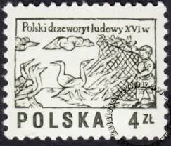 |
| ebid.net | Mi 2537: 4 Zl. black-olive Defin.: Polish Folklore: Carvings from the 16th-cent. on eBid United States | 200364700 |  |
| Polska6.pl | Znaczki Polska6.pl - Sklep filatelistyczny | 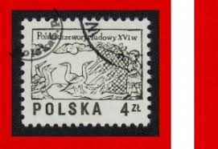 |
| Dreamstime.com | Hunting Serie Stock Photos - Free & Royalty-Free Stock Photos from Dreamstime | 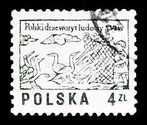 |
| Todocolección | sello polonia 1920 silesia) polaco sc#87 nuevo - Compra venta en todocoleccion | 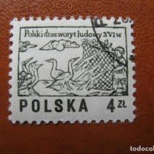 |
| MyViMu.com | Znaczki pocztowe - Polska, 1977 r. w MyViMu.com | 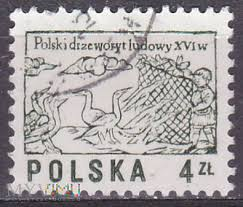 |
| YouTube | Ceny Zaczków Polski Roczniki #filatelistyka #Stamp #Briefmarke #abonament - YouTube | 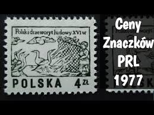 |
| Uniwersytetu Zielonogórskiego | Mirosław Gugała / Institute of Visual Arts | 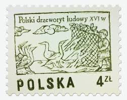 |
| Osta | Poola 1977; puulõiked; 2 marki; puhtad ** (247399310) - Osta.ee | 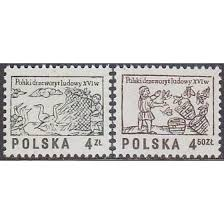 |
| HipStamp | Poland 1974/77 Scott 2071A used - 4z, wood carvings, Boy snaring geese | Europe - Poland, General Issue Stamp / HipStamp | 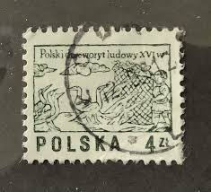 |
| FILATELIA Sklep filatelistyczny | 2390-2391 czyste** Polski drzeworyt ludowy XVI w. Filatelia sklep filatelistyczny ze znaczkami pocztowymi Sklep filatelistyczny FILATELIA sprzedaż znaczków pocztowychsklep filatelistyczny ze znaczkami, polskie znaczki pocztowe, filatelistyka, walory ... | 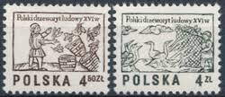 |
| Blogger.com | The Postal Picture: Xylography | 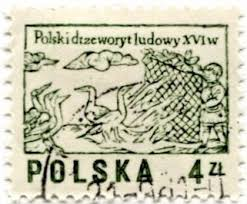 |
| Hanmart | Stamp Poland 1978 Mi 2581 MNH | 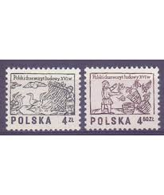 |
| esam.ir | تمبر زیبا وکلاسیک خارجی بامهر گمرکی | 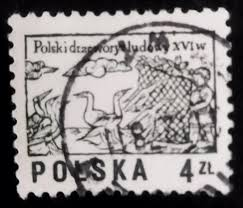 |
| Shutterstock | polish Stamp": Over 7,871 Royalty-Free Licensable Stock Photos | Shutterstock | 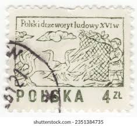 |
| stampsandstuff.net | Stamps from Poland 1970-1979 | 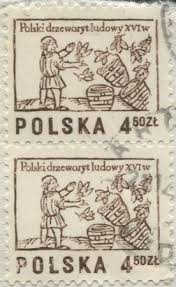 |
| Alamy | Postage stamp from Poland depicting a 13th century knight Stock Photo - Alamy | 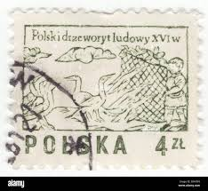 |
| Магазин Монеты | Марка «Польский красный крест» 1977 год Польша №19-83543 — Иностранные в интернет-магазине «Монеты» | 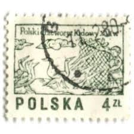 |
| Allegro Lokalnie | Fi: 2390 2391 Drzeworyt ludowy w XVI w | Warszawa | Kup teraz na Allegro Lokalnie | 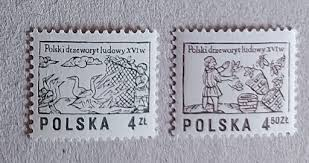 |
| Todocolección | polonia, 1949, cat.yt. 555. - Acheter Timbres anciens de Pologne sur todocoleccion | 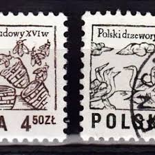 |
| HipStamp | Poland #2070-2071B 16th Century Woodcuts; Used (1.00) | Europe - Poland, General Issue Stamp / HipStamp | 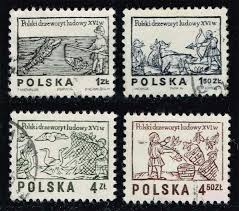 |
| Freestampcatalogue.com | Stamps with the theme Bees - Freestampcatalogue.com - The free online stampcatalogue with over 500.000 stamps listed. |  |
| Allegro | Fi 2390-2391 ** Polski drzeworyt ludowy XVI w. • Cena, Opinie - Allegro | 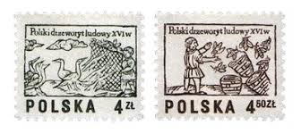 |
| eBay UK | Art, Artists Used Polish Stamps for sale | eBay UK | 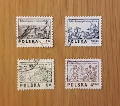 |
| polska-filatelistyka.co.uk | Poland 1974 - Fi 2203-2204 MNH** - Polska Filatelistyka | 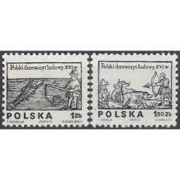 |
| eBay | Poland - 100 pieces - Fishing scene – a fisherman - 1974 | eBay | 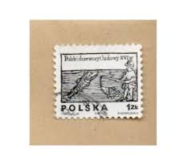 |
| Alamy | Vintage postage stamps from Poland on a white background Stock Photo - Alamy | 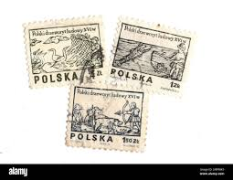 |
| eBay Australia | Poland 1977,16th century woodcut, Beekeeper and hives, SG 2526, vfu. | eBay Australia | 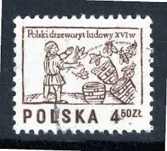 |
| volstamp.in.ua | Buy 1977 Poland Series of stamps (Patterns from woodcuts of the 16th century) Used №2537-2538 | 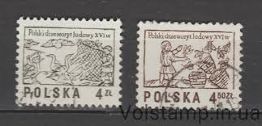 |
| eBay UK | 2 stamps "Series: Designs from 16th century woodcuts" Poland 1977 | eBay UK |  |
| Alamy | Postage stamp from Poland in the Designs from 16th century woodcut series issued in 1977 Stock Photo - Alamy | 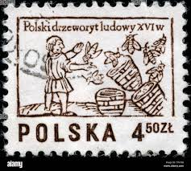 |
| eBay | Polska 1zt Polski drzeworyt ludowy XVIw Poland Single Stamp | eBay | 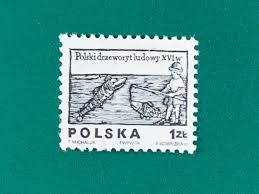 |
| YouTube | Postage stamp. POLSKA. Polski drzeworyt ludowy 16w. Price 4.50 Zl - YouTube | 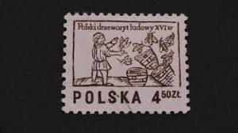 |
| Dreamstime.com | Philatelic Impressions Exploring Stamps, Symbols, and History Editorial Stock Image - Image of stamp, katowice: 306123249 | 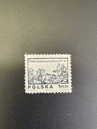 |
| The Philately | Poland 1974 Mi 2350-2351 Designs from 16th century woodcuts Sc 2070-2071 for sale at The Philately | 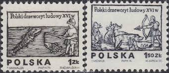 |
| Shutterstock | Poland Circa 1974 Stamp Printed Poland Stock Photo 129839414 | Shutterstock | 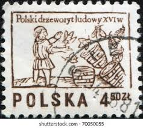 |
| Todocolección | polonia, polska - v/f 4,50 zt - artesania polac - Buy Antique stamps of Poland on todocoleccion | 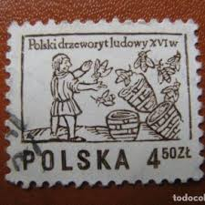 |
| YouTube | STAMPS NR 101. POLSKA 150 ZK - YouTube | 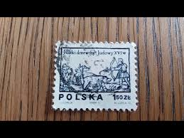 |
| volstamp.in.ua | Buy 1979 North Korea Series of stamps (Honey Bee (Apis mellifera)) Used №1929-1931 | 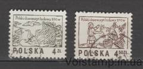 |
| Dreamstime.com | Honey bee editorial stock photo. Image of collecting - 231615423 | 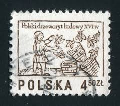 |
| Osta.ee | Poola " KALAPÜÜK / JAHT " 1974 (247761722) - Osta.ee | 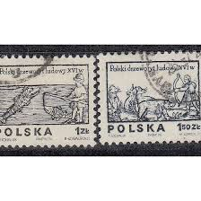 |
| Todocolección | polonia 1976, vasos corintios, yt 2296 - Buy Antique stamps of Poland on todocoleccion | 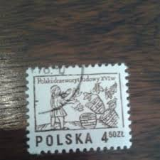 |
| HipStamp | Poland 1974 #2071,2071b, Woodcuts, Used/cto. | Europe - Poland, General Issue Stamp / HipStamp | 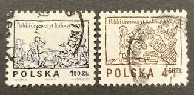 |
| eBay UK | Poland 1974/77 Polish Folklore two full sets (4v.) (SG 2337-8/2525-6) used | eBay UK | 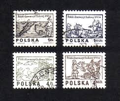 |
| eBay UK | POLAND STAMPS SG2337/8 POLISH FOLKLORE 1974 FINE USED | eBay UK | 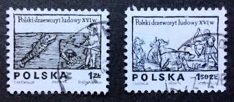 |
| Alamy | POLAND — 1977 December 12: 4.50 zloty dark brown postage stamp depicting Beekeeper. Design from 16th century woodcut. Beekeepers are also called honey farmers, apiarists, or less commonly, apiculturists. The term beekeeper |  |
| eBay UK | POLAND 1975 Folklore: 16th Century Wood Carvings (#1). Set of 2 USED SG2337/2338 | eBay UK |  |
| eBay UK | POLAND STAMPS SG2337/8 POLISH FOLKLORE 1974 FINE USED | eBay UK | 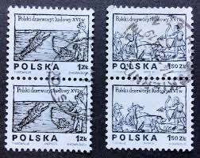 |
| The Philately | China 2000 Sc 3030-3037 Children's stamp design competition Mi 3148-3155 for sale at The Philately | 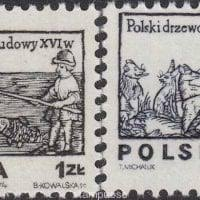 |
| Alamy | Poland stamp a fisherman hi-res stock photography and images - Alamy | 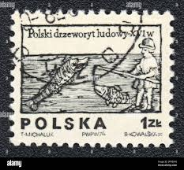 |
| eBay | Poland 2070 used | eBay | 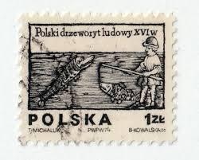 |
| Alamy | POLAND - CIRCA 1974: A stamp printed in Poland from the "Flowers. Drawings by Stanislaw Wyspianski" issue shows Rose, circa 1974 Stock Photo - Alamy | |
| Hanmart | Stamp Poland 2013 Fi bl 246A MNH | |
| Shutterstock | 1+ Thousand Poland Beehive Royalty-Free Images, Stock Photos & Pictures | Shutterstock | |
| eBay UK | POLAND 1975 Folklore: 16th Century Wood Carvings (#1). Set of 2. MNH SG2337/2338 | eBay UK | |
| eBay | Poland 1965 WARSAW 700th Anniversary Complete MNH Set SC ## 1934-1942 | eBay |